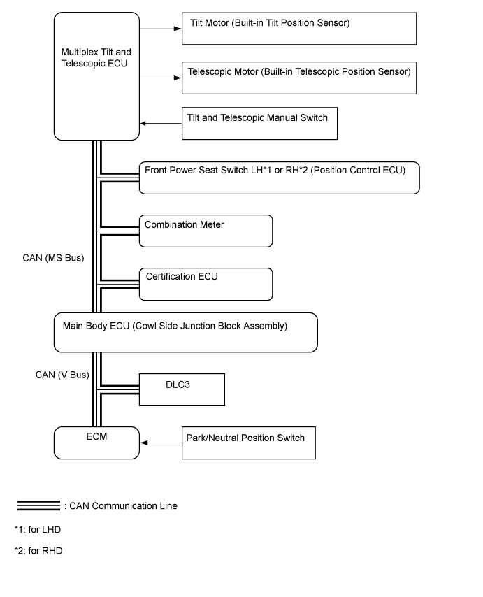
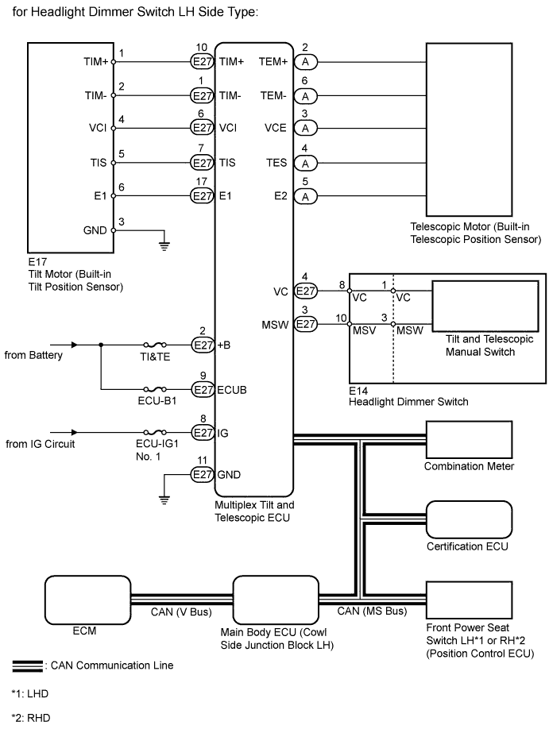

POWER TILT AND POWER TELESCOPIC STEERING COLUMN SYSTEM > SYSTEM DIAGRAM |


| Sender | Receiver | Signal | Line |
| Main Body ECU | Multiplex Tilt and Telescopic ECU |
| CAN |
| Multiplex Tilt and Telescopic ECU | Front Power Seat Switch LH*1 or RH*2 (Position Control ECU) |
| CAN |
| Front Power Seat Switch LH*1 or RH*2 (Position Control ECU) | Multiplex Tilt and Telescopic ECU |
| CAN |
| Combination Meter ECU | Multiplex Tilt and Telescopic ECU | Vehicle speed signal | CAN |
| Tilt and Telescopic Manual Switch | Multiplex Tilt and Telescopic ECU | Tilt and telescopic manual switch signal | Serial |